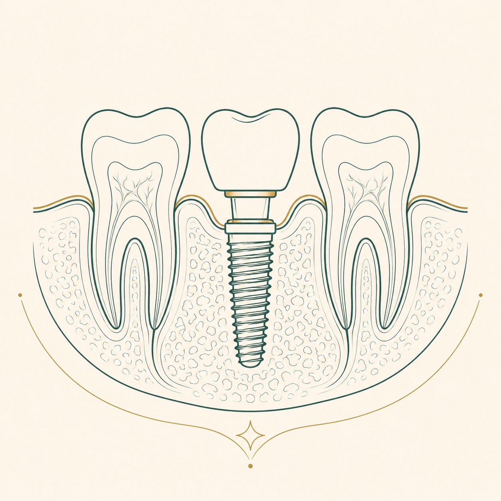

İmplant, eksik dişin yerine çene kemiğine yerleştirilen ve üzerine kron, köprü veya protez taşıyan yapay diş köküdür. Doğru planlanan ve düzenli bakımı yapılan implantlar, bilimsel çalışmalarda on yıl ve üzeri sürelerde yüzde doksanın üzerinde yerinde kalma oranı göstermektedir [1, 2].
İmplant nedir?
İmplant, çoğunlukla titanyumdan üretilen vida biçiminde bir yapay kök ile bunun üzerine takılan dayanak ve kron bölümlerinden oluşur. Titanyumun kemikle biyolojik olarak kaynaşabildiği, 1960'lı yıllarda İsveçli araştırmacı Per-Ingvar Brånemark ve ekibinin çalışmalarıyla gösterilmiş ve bu kaynaşma "osseointegrasyon" olarak adlandırılmıştır [3]. Günümüz implant tedavisi bu bilimsel temel üzerine kurulur. Titanyum alerjisi gibi özel durumlarda zirkonyum esaslı seramik implantlar da bir seçenek olabilir; hangi malzemenin uygun olduğuna muayene sonrasında hekim karar verir.
Kimler için değerlendirilir?
Tek diş eksikliğinden tüm dişlerin kaybına kadar uzanan durumlarda implant bir seçenek olarak değerlendirilebilir. Uygunluk; çene kemiğinin hacmi ve yoğunluğu, diş eti sağlığı, genel sağlık durumu ve kullanılan ilaçlar birlikte ele alınarak belirlenir. Kontrolsüz diyabet, tedavi görmemiş diş eti hastalığı ve yoğun sigara kullanımı iyileşmeyi olumsuz etkileyebilen etkenlerdir [4]. Kemik hacminin yetersiz olduğu durumlarda kemik grefti veya sinüs tabanı yükseltme gibi ön işlemler gerekebilir.
Tedavi nasıl ilerler?
Süreç, ilk muayeneden kalıcı dişin uygulanmasına kadar planlı aşamalarla ilerler.
Muayene ve görüntüleme
Ağız içi muayene, üç boyutlu tomografi ve ağız içi tarayıcıyla dijital ölçü alınır.
Planlama
Cerrahi plan, hacimsel tomografi üzerinde hastaya özel hazırlanır.
İmplantın yerleştirilmesi
İmplant, lokal anestezi altında (hekimin uygun gördüğü durumlarda sedasyon veya genel anestezi desteğiyle) çene kemiğine yerleştirilir.
İyileşme
Kemikle kaynaşma genellikle iki ila altı ay sürer; bu süre hastadan hastaya değişir.
Kalıcı diş
Dayanak takılır; kalıcı kron veya köprü, klinik bünyesindeki laboratuvarda üretilerek uygulanır. Uygun vakalarda geçici protezle aynı gün diş teslimi de planlanabilir; buna hekim karar verir.
Tüm çene eksikliklerinde
Bir çenedeki tüm dişlerin eksik olduğu durumlarda, dört veya altı implant üzerine sabitlenen tam çene protezleri uygulanabilir. Bu yaklaşımlar hareketli protez kullanmak istemeyen hastalar için sabit bir seçenek sunar. Hangi yapılandırmanın uygun olduğu; kemik hacmi, kapanış ilişkisi ve genel sağlık durumuna göre hekim tarafından belirlenir.
Başarı oranı ve ömür
7.711 implantı kapsayan ve en az on yıl takip içeren bir sistematik derlemede ortalama yerinde kalma oranı yüzde 94,6 olarak bildirilmiştir [1]. Bir başka derleme, on yıllık takipte yüzde 96,4 oranı rapor etmektedir [2]. Bu oranlar; düzenli ağız bakımı, diş hekimi kontrolleri ve sigaradan uzak durma ile yakından ilişkilidir. İmplantın kendisi çürümez; ancak çevresindeki diş eti ve kemik, doğal dişlerde olduğu gibi hastalanabilir.
Riskler ve olası sorunlar
Her cerrahi işlem gibi implant tedavisinin de riskleri vardır. Erken dönemde enfeksiyon, kanama ve şişlik; ileri dönemde implant çevresi dokularının iltihabı (peri-implantitis) görülebilir. Amerikan Periodontoloji Akademisi, peri-implantitisin erken belirtilerinin diş eti kanaması ve kızarıklık olduğunu ve düzenli kontrollerle erken dönemde yönetilebildiğini bildirmektedir [4]. Alt çenede sinir yakınlığı, üst çenede sinüs komşuluğu gibi anatomik durumlar planlama aşamasında üç boyutlu görüntülemeyle değerlendirilir.
İyileşme ve bakım
İşlem sonrası ilk günlerde hekimin önerdiği ilaç düzenine ve beslenme kısıtlarına uyulması beklenir. Uzun dönemde implant bakımı doğal diş bakımından farklı değildir: günde iki kez fırçalama, arayüz temizliği ve düzenli hekim kontrolü [5]. Amerikan Diş Hekimleri Birliği, implant çevresi dokuların sağlığı için düzenli profesyonel temizliğin önemini vurgulamaktadır [5].
Sık sorulan sorular
İmplant işlemi ağrılı mıdır?
Yerleştirme işlemi lokal anestezi altında yapılır ve işlem sırasında ağrı duyulması beklenmez. İşlem sonrasındaki birkaç gün görülebilen hassasiyet ve şişlik, hekimin önerdiği ilaçlarla genellikle yönetilebilir düzeydedir. Kaygısı yüksek hastalarda sedasyon seçenekleri hekimle birlikte değerlendirilebilir.
Tedavi toplam ne kadar sürer?
Cerrahi yerleştirme genellikle tek seansta tamamlanır. Kemikle kaynaşma için beklenen süre çoğunlukla iki ila altı aydır; kalıcı kron bu sürenin sonunda uygulanır. Kemik grefti gereken durumlarda toplam süre uzayabilir. Kişiye özel takvim, muayene sonrasında hekiminiz tarafından belirlenir.
İmplant her yaşta yapılabilir mi?
Çene gelişimi tamamlanmış her yetişkin için değerlendirilebilir; üst yaş sınırı yoktur. Belirleyici olan yaş değil, kemik yapısı ve genel sağlık durumudur. Gelişimi süren genç hastalarda ise implant, büyüme tamamlanana kadar ertelenir.
Sigara implantı etkiler mi?
Evet. Sigara, kemikle kaynaşma sürecini ve diş eti sağlığını olumsuz etkileyen, implant kaybı riskini artıran etkenlerin başında gelir. İşlem öncesi ve sonrası dönemde sigaradan uzak durulması, tedavinin başarısı açısından önemlidir.
İmplantın ömrü ne kadardır?
Bilimsel derlemeler, on yıl ve üzeri takiplerde yüzde doksanın üzerinde yerinde kalma oranları bildirmektedir. Düzenli bakım ve kontrollerle implantlar çok uzun yıllar işlev görebilir. Üzerindeki kron ise aşınmaya bağlı olarak zaman içinde yenilenebilir.
İmplant mı, köprü mü? Aralarındaki fark nedir?
İmplant, eksik dişin yerine komşu dişlere dokunmadan doğrudan çene kemiğine yerleştirilir; böylece sağlam komşu dişler korunur ve çiğneme kuvveti kemiği uyararak bölgedeki kemik erimesini yavaşlatır. Köprüde ise boşluğun iki yanındaki dişler küçültülerek dayanak haline getirilir. Hangi seçeneğin uygun olduğu; kemik durumu, komşu dişlerin sağlığı ve genel ağız yapısına göre muayene sonrasında hekim tarafından belirlenir.
Kemiğim yetersizse implant yapılamaz mı?
Kemik hacmi veya yoğunluğu yetersiz olduğunda bu çoğu zaman engel değildir. Kemik grefti veya sinüs tabanı yükseltme gibi ön işlemlerle bölge implanta hazır hale getirilebilir. Kemik durumu üç boyutlu tomografiyle değerlendirilir ve uygun yaklaşım hastaya özel planlanır.
Titanyum implant vücuda zarar verir mi, alerji yapar mı?
İmplantlar büyük oranda titanyumdan üretilir. Titanyum, vücutla yüksek uyumu nedeniyle yalnızca diş hekimliğinde değil ortopedi ve diğer cerrahi alanlarda da uzun yıllardır kullanılan bir malzemedir. Alerjik yanıt çok nadirdir. Bilinen bir metal duyarlılığınız varsa tedavi öncesinde hekiminize bildirmeniz, seçeneklerin birlikte değerlendirilmesini sağlar.
Tedavi boyunca kliniğe kaç kez gelmem gerekir?
Ziyaret sayısı vakaya göre değişir. Genellikle muayene ve planlama, cerrahi yerleştirme, iyileşme sürecindeki kontrol ve kalıcı kronun uygulanması gibi aşamalar için birden fazla randevu gerekir. Kesin plan, ağız içi muayene ve görüntüleme sonrasında hekiminiz tarafından paylaşılır.
Kaynakça
- Moraschini V, Poubel LA, Ferreira VF, Barboza ES. Evaluation of survival and success rates of dental implants reported in longitudinal studies with a follow-up period of at least 10 years: a systematic review. International Journal of Oral and Maxillofacial Surgery, 2015; 44(3): 377-388.
- Howe MS, Keys W, Richards D. Long-term (10-year) dental implant survival: a systematic review and sensitivity meta-analysis. Journal of Dentistry, 2019; 84: 9-21.
- Brånemark PI ve ark. Osseointegrated implants in the treatment of the edentulous jaw. Scandinavian Journal of Plastic and Reconstructive Surgery, 1977; 16 (Suppl).
- American Academy of Periodontology (Amerikan Periodontoloji Akademisi). Peri-implant diseases, hasta bilgilendirme kaynakları. perio.org
- American Dental Association (Amerikan Diş Hekimleri Birliği). Implants, MouthHealthy hasta bilgilendirme portalı. mouthhealthy.org
Bu tedavi hakkında soru sormak ister misiniz? Diş hekimlerimize dilediğiniz saatte yazabilirsiniz.
Bize yazın